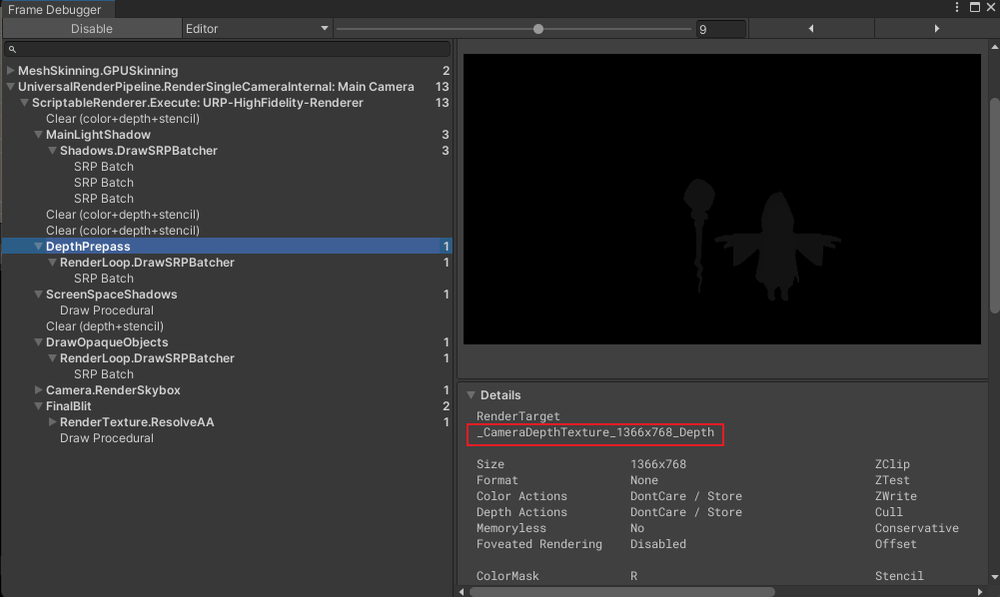
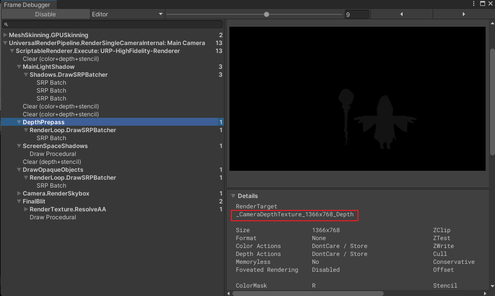

12. 渲染管线
12.9.9.1 ScreenSpaceShadow
1.ShadowMap的原理
1.1 首先从光源出发计算深度图(也就是光源能看到/照射到的部分)
1.2.1 针对摄像机看到的每一个点,然后求到光源的距离(真实距离光源的距离),如果这个距离和光源看到的是一样的,那就证明光源照到了这个点,不是阴影,需要计算光照
1.2.2 另外一个情况就是物体距离光源照到的部分要远,那就说明物体被遮挡了,光源无法到达这个部分,处于阴影区域.
2.URP的ScreenSpaceShadow功能
2.1 Screen Space Shadow会先同样的从光源空间生成Shadowmap.(本来就会做的,所以没有消耗)

2.2强制执行一遍不透明物体的Depth Prepass(深度预渲染)来将当前渲染的深度保存在_CameraDepthTexture中.如果选择的事Deferred渲染路径,它本来就会渲染独立的深度图,所以没有消耗,如果是Forward或Forward+渲染路径,那就意味着要独立的创建一张深度图了.
传统的渲染方式shadowMap会根据片元越多算的越多,性能是和物体数量挂钩的,这种屏幕空间的阴影则是根据DepthPrepass的深度图和ShadowMap的光源空间阴影图对比,直接得到屏幕空间所有对象的结果,和物体数量无关了,而是跟贴图的分辨率相关了.
2.3.通过对比ShadowMap的_MainLightShadowmapTexture和DetphPrepass的_CameraDepthTexture,判断距离的远近得到_ScreenSpaceShadowmapTexture.最终的片元就可以通过读取这张贴图的信息来判断物体是否处于阴影然后进行操作了.
屏幕空间阴影的计算量是和分辨率相关而和场景复杂度无关,但如果是在前向渲染路径(Forward/+)就需要额外开辟两个内存空间存储预处理屏幕深度图和屏幕阴影图,而且仅适用于不透明物体
2.1 Screen Space Shadow会先同样的从光源空间生成Shadowmap.(本来就会做的,所以没有消耗)

2.2强制执行一遍不透明物体的Depth Prepass(深度预渲染)来将当前渲染的深度保存在_CameraDepthTexture中.如果选择的事Deferred渲染路径,它本来就会渲染独立的深度图,所以没有消耗,如果是Forward或Forward+渲染路径,那就意味着要独立的创建一张深度图了.
传统的渲染方式shadowMap会根据片元越多算的越多,性能是和物体数量挂钩的,这种屏幕空间的阴影则是根据DepthPrepass的深度图和ShadowMap的光源空间阴影图对比,直接得到屏幕空间所有对象的结果,和物体数量无关了,而是跟贴图的分辨率相关了.
2.3.通过对比ShadowMap的_MainLightShadowmapTexture和DetphPrepass的_CameraDepthTexture,判断距离的远近得到_ScreenSpaceShadowmapTexture.最终的片元就可以通过读取这张贴图的信息来判断物体是否处于阴影然后进行操作了.
屏幕空间阴影的计算量是和分辨率相关而和场景复杂度无关,但如果是在前向渲染路径(Forward/+)就需要额外开辟两个内存空间存储预处理屏幕深度图和屏幕阴影图,而且仅适用于不透明物体